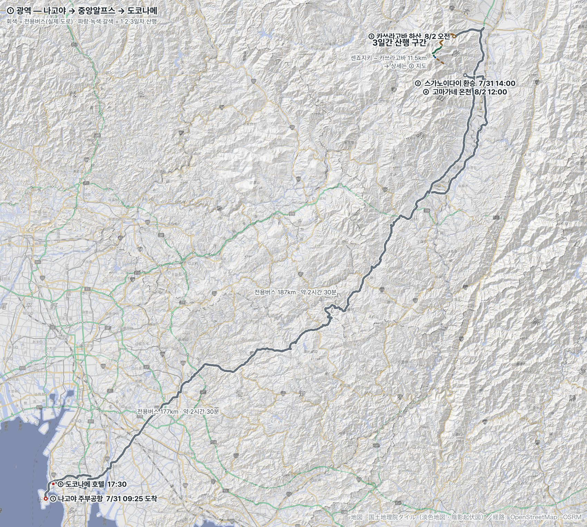
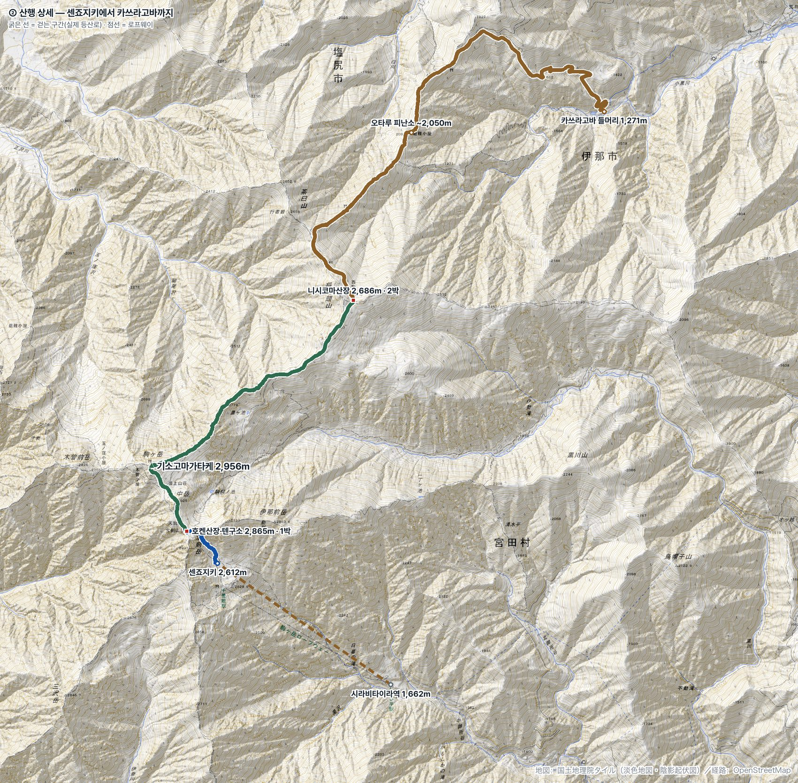

← 문서 목록
Central Alps · Route Maps
경로 지도
일본 국토지리원 지형도에 실제 경로를 표시했습니다. 등산로는 OpenStreetMap의 트레일 데이터,
버스 구간은 실제 도로 경로입니다. 직선으로 이은 곳은 로프웨이뿐입니다.
7/31
8/1
8/2
전용버스
① 광역 — 나고야 주부공항에서 중앙알프스를 거쳐 도코나메까지. 전용버스 편도 약 187km, 2시간 30분.

② 산행 상세 — 센죠지키에서 카쓰라고바까지 걷는 구간 11.5km. 마노세 능선의 굽이와 하산길 지그재그가 실제 형상입니다.
